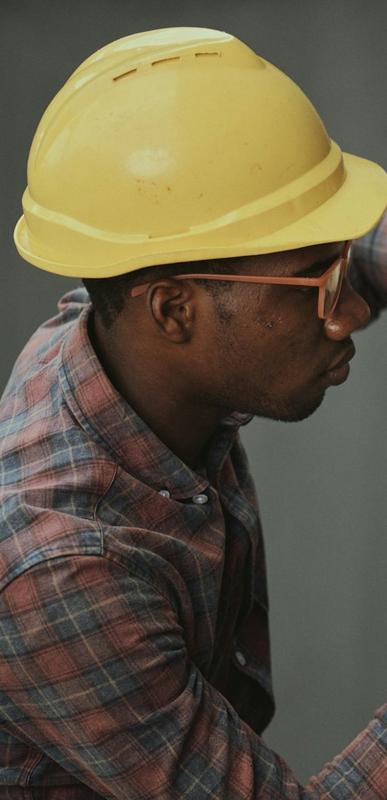
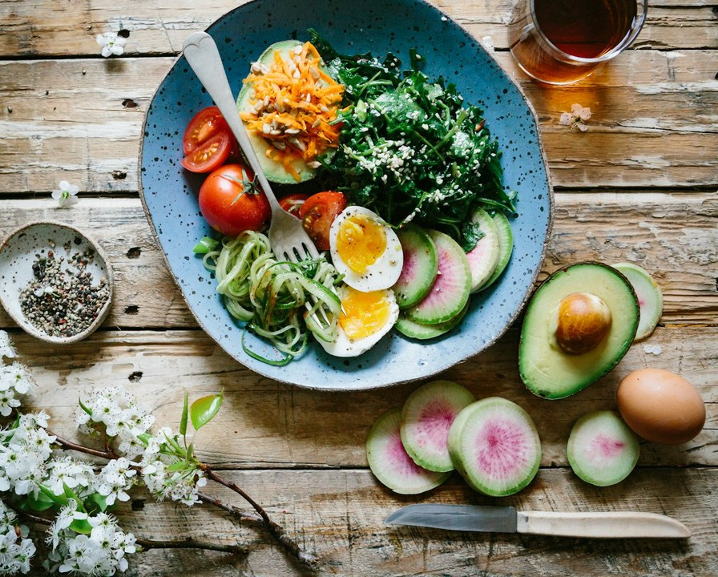

@fairhealth.br01/07
hoje, 02:14
não tô dormindo direito, tô brigando em casa e não consigo focar no trabalho
posso tomar alguma coisa pra dormir?
assistente de IA digitando
7 em cada 10
brasileiros consideram
desabafar com uma IA.
Fonte: Doctoralia, pesquisa com 3.903 usuários (2026)
O que isso diz sobre o cuidado no trabalho →
@fairhealth.br02/07
Por que uma IA?
Ela está lá quando
ninguém mais está.
31,2%
porque está disponível a qualquer hora
26,2%
pelo custo
14%
por vergonha de falar com outra pessoa
Motivos citados. Fonte: Doctoralia, pesquisa com 3.903 usuários (2026)
Mas, numa crise forte de ansiedade, só
4%
recorreriam primeiro
a uma IA.
Na hora que pesa, a gente quer gente.
@fairhealth.br03/07
E não é só desabafo
A IA também virou
consultório.
71%
usaram IA para tirar dúvidas sobre sintomas ou doenças no último ano
49%
pesquisaram remédios com a IA
37%
dos psiquiatras já atenderam pacientes pedindo ajuste de remédio sugerido por IA
Fontes: Olá Doutor, pesquisa com 500 pessoas (2026) · Doctoralia, pesquisa com mais de 1.700 psicólogos e psiquiatras (2026)
Remédio sem indicação e exame sem necessidade fazem mal. Na medicina, esse dano tem nome: iatrogenia.
No trabalho, ele vira atestado e falta.

@fairhealth.br04/07
01
Escuta
Todo mundo quer ser
ouvido de verdade.
No Escritório do Cuidado, a primeira consulta começa por uma pergunta: o que importa para você? Turno, casa, sono e a conta do mês entram na conversa. Sem julgamento, e com sigilo.
Conhece quem cuida das pessoas na sua empresa?
Mande este post para essa pessoa.
@fairhealth.br05/07
02
Por perto
Ninguém quer perder
meio dia por uma consulta.

Médico, psicólogo e assistente social ficam dentro da empresa, a poucos passos de quem trabalha, presencial ou remoto.
Na avaliação, entram hábitos, sono, estresse e bioimpedância.
A dúvida chega ao médico antes de virar remédio.
@fairhealth.br06/07
03
Plano
e retorno

Uma resposta
não é um plano.
No Escritório do Cuidado, o plano é combinado com a pessoa, tem base na Medicina do Estilo de Vida e é revisto a cada retorno. Cada um recebe o cuidado de que precisa: sem remédio a mais nem exame à toa.
−28%
de absenteísmo com programas de saúde preventiva
Fonte: Harvard Business Review, 2022
@fairhealth.br07/07
posso tomar alguma coisa pra dormir?
Quando alguém do seu
time perguntar isso,
que a resposta
venha de gente.
Escuta, cuidado por perto e um plano com retorno: é isso que o Escritório do Cuidado leva para dentro da empresa.
Comente CUIDADO
e enviamos na DM como funciona o diagnóstico gratuito.
Na quarta: quatro frentes, um cuidado conectado.
 @fairhealth.br
@fairhealth.br